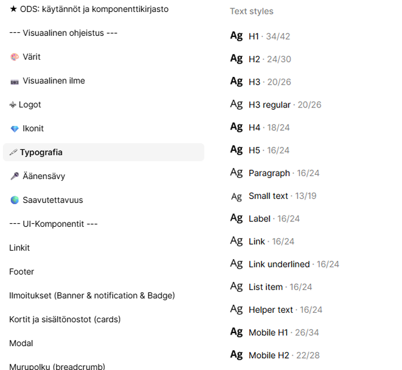
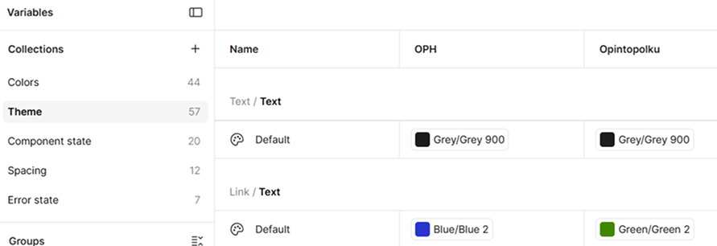
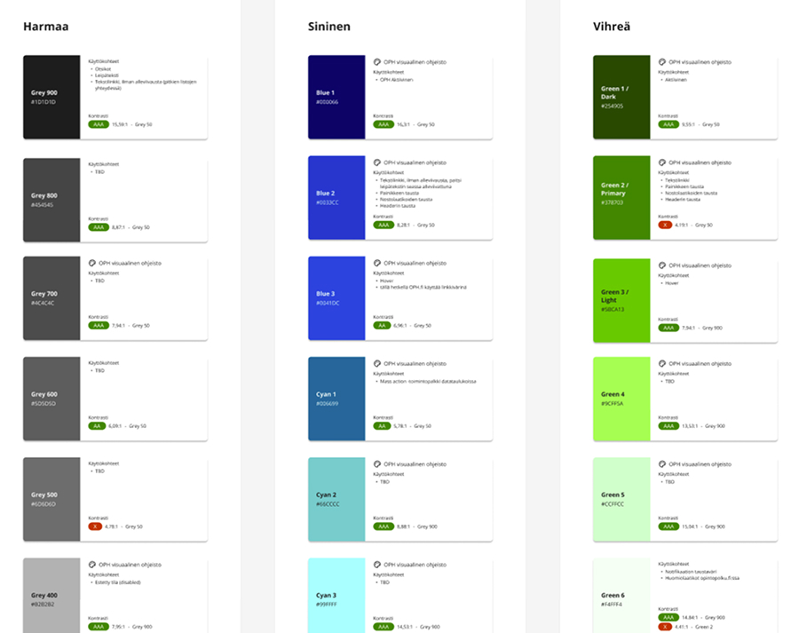
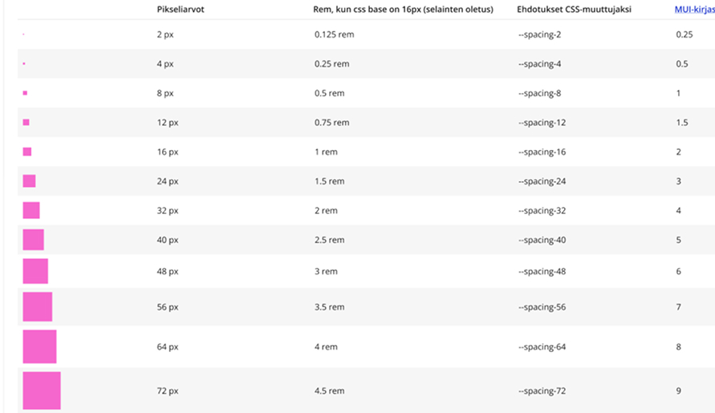
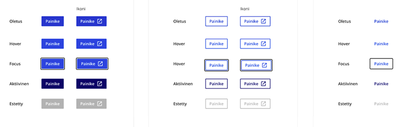
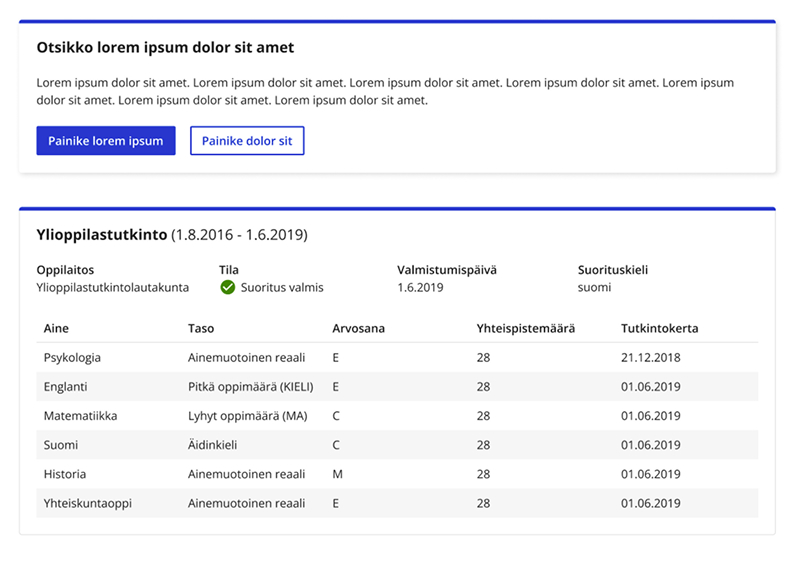
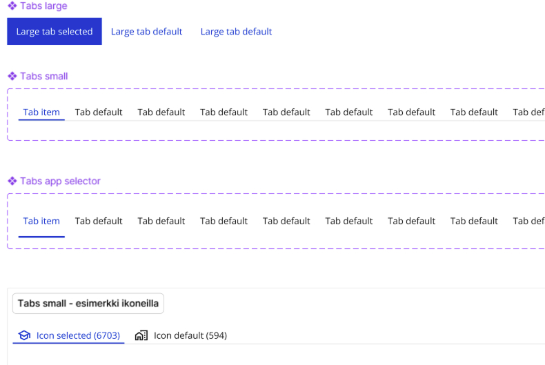
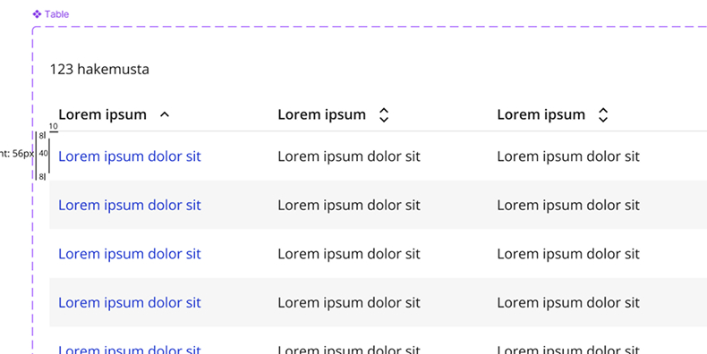

Design-systeemin kehitys ja päätöksenteon konsultointi
Opetushallituksen design system
Suunnittelin Opetushallitukselle uuden yhtenäisen design systeemin suhteellisen pienellä budjetilla / työmäärillä, osana organisaation digipalveluiden uudistustyötä.
Haaste
Ulkoasultaan ja käytettävyydeltään vanhentuneet palvelut eikä kunnollista design systeemiä.
- Paljon vanhentuneita palveluita niin ulkoasun kuin käytettävyyden kannalta
- Ei design systeemiä
- Ei huomioitu käyttäjälähtöisyyttä kehitystyössä
Ratkaisu
En vain suunnittelut uutta komponentti- ja tyylikirjastoa figmaan, vaan olin rakentamassa mallia, jolla Opetushallitus pystyy suunnittelemaan ja kehittämään digipalveluitaan johdonmukaisemmin ja yhtenäisesti, niin sisäisten kuin julkisten palveluiden osalta.
- Vanhentuneiden ja epäyhtenäisten palveluiden läpikäynti sekä toistuvien elementtien kerääminen
- Osana uudistettavia palveluita uuden yhtenäisen design systeemin suunnnittelu ja käyttöönotto skaalautuvaksi järjestelmäksi.
- Design systeemi moniteemainen: huomioitu niin julkiset kuin sisäiset palvelut, joilla erilaisia tarpeita
- Design system -työtä paljon laajemmin kuin vain figman tasolla: design systemin osaomistajuus ja päätöksenteon konsultointi, jolloin kokonaisuus laajeni komponenteista organisaation toimintamalliksi.
- Usean palvelun käyttöliittymien uudelleen suunnittelu design systeemiä hyödyntäen.
- Design systeemin jatkokehitys uusissa palveluissa toistuvien hyvien käytäntöjen myötä.
- Komponenttien toteutuksen speksaus kehittäjille koodattua design systeemiä varten sekä roadmapin ylläpito.
- Toteutuksen laadunvarmistus testaamalla komponentit ennen julkaisua niin ulkoasun kuin saavutettavuuden kannalta.
Kehitystyö ja päätöksenteko
Suunnittelun ohessa olen ollut ratkaisemassa seuraavia DS:n kehitykseen liittyviä kysymyksiä:
- Kuinka design systeemiä tehdään järkevästi, kun käytössä oleva budjetti on hyvin rajallinen?
- Milloin tehdään täysin uusi komponentti tai milloin laajennetaan olemassa olevaa? Ja kuka muutokset saa tehdä?
- Milloin muutos pysyy yhden projektin omana mallina, eikä sitä oteta DS:ään?
- Miten rikkinäiset tai vanhat komponentit poistetaan?
- Miten muutokset katselmoidaan?
- Miten design- ja koodikomponentit pysyvät synkassa? Tämä liittyy myös backlogin hallintaan.
- Viestintä sidosryhmille: Kuinka ja missä kanavissa design systeemin muutoksista kannattaa viestiä?
Työnäytteitä




Komponentteja




← Portfolioon